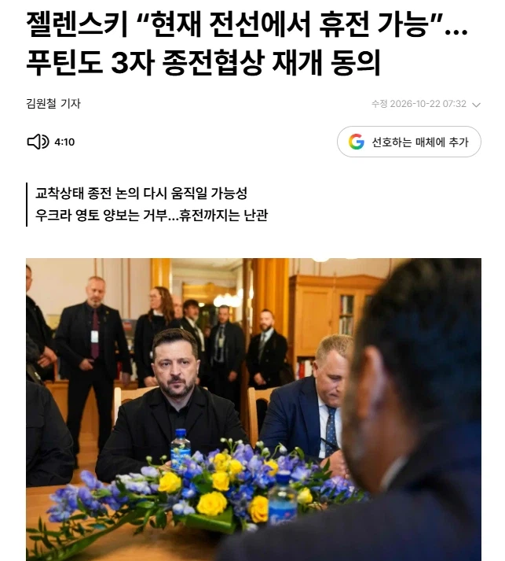

참고로 여태까지 젤렌스키 스탠스는 쭉 "개전 이전 국경아니면 협상불가"였다
다만 노보러시아, 크림을 러시아영토로 인정하는 종전안은 거부한다고 함

참고로 여태까지 젤렌스키 스탠스는 쭉 "개전 이전 국경아니면 협상불가"였다
다만 노보러시아, 크림을 러시아영토로 인정하는 종전안은 거부한다고 함
엥 그럼 변수에 따라 충분히 안망할 수 있는거네
그리고 지금 현 상황은 러시아가 안망하고 승전했고 ㅇㅇ
미국은 우크라이나 버리고 러시아에 붙었고
아가리 좆문가야 ㅋㅋ
러시아는 이미 망한게 맞다니까 뭔 개소리야 넌 그럼 한국이 아프리카랑 싸우다 인구 갈리고 경제 망가져도 안 망했다고 할거냐? 말 같지도 않은 소리를 하고 있어 퇴보를 하면 망한거지 그게 안 망한거야?
망했는데 왜 미국이 우크라이나 못지킴?
러시아가 망했으면 미국 유럽이 우크라이나 안버리지
미국 유럽이 러시아보다 못하다는거냐 지금? 병신ㅋㅋㅋ
너는 암 걸렸다가 치료 받으면 암이 안 걸린게 된거냐? 뭐 이런 사고방식이 다 있어?
ㅇㅇ 근데 왜 미국은 망한나라 러시아에 붙고 우크라이나 버림?
미국이 너보다 멍청한거야?
대답을 못해 좆병신답게 ㅋㅋ
그런 트럼프가 병신이라 그런거고 트럼프 지지율 꼬라지를 봐라 정상인이냐? 개박살났잖음?
아 그렇구나 너가 미국 대통령이었어야 했는데 ㅋㅋㅋㅋㅋㅋㅋ
현실은 개드립 키보드로 전쟁하는 아가리파이터네 ㅋㅋㅋㅋ
병신 ㅋㅋㅋㅋ 2차 대전 직후 독일 일본이 안 망했다는 지적 수준으로 나보고 아가리파이터 이러고 있네 한심한 인생아.
병신 자의식과잉 아가리파이터 좆문가새끼 수준ㅋㅋㅋㅋㅋㅋㅋㅋㅋㅋ
러시아 쳐망한걸 전세계가 모르고 나만 안당께 ㅋㅋㅋㅋㅋㅋㅋㅋㅋ
주변에 일본 독일인 친구들한테 물어봐라 그 시절에 안 망했었냐고 ㅋㅋㅋㅋㅋㅋ 웃겨서 말이 안 나오네.
주변에 미국 유럽 친구 있으면 물어봐라 ㅋㅋㅋㅋㅋㅋ 왜 지구 최강국이 망한나라 러시아에 들러붙냐고 ㅋㅋㅋㅋㅋㅋㅋㅋㅋㅋㅋㅋㅋㅋ 저능아 좆문가새끼 주제파악 레전드
그야 너같은 트럼프가 대가리라서 그런거임
그럼 유럽은?ㅋㅋㅋㅋㅋㅋㅋㅋ EU+미국 전세계가 다 너보다 멍청하다는 정신병은 고쳐야지
결과적으로 트럼프가 대가리라 러시아가 안망하고 승전하고 이득본거임
인구 갈린거보다 얻는게 크니까
유럽은 손절안하는데? 독일 iris-t 랑 프랑스 samp/t 계속 지원중인데?
괜찮음 북한 남자 데려오면 됨
북한도 인구 별로 없음. 지금 중국도 실제 인구가 12억 정도고 조작된 인구라는 이야기가 월스트리트 저널에서 나오는데 북한 2천만도 뻥튀기일 확률 높음. 남한 견제까지 생각하면 한계가 명확함.
https://www.donga.com/news/amp/all/20261016/134854229/1
중국은 한자녀정책때 태어난 무호적자도 있고 해서 15-16억정도 보는거 아니었나
저거 중국인 출신 이푸센이란 인구학자가 아동 필수 백신 등의 중국 통계 기준으로 조사한 거임. 중국 통계부터 마사지가 들어가는데 그 기준으로 따져도 말이 안 된다는 거임.
아 줴줴이야
그럼 종전 못하는거잖아 ㅋㅋ
노보러시아까지 다 넘기면 우크라는 내륙국이라 절대 안받을걸
그거 둘째쳐도 아직 지들이 안먹은땅까지 먼저 넘겨주면 그게 매국노지 ㅋㅋㅋㅋㅋ
내가 젤렌스키면 무슨 선택할지 감도 안온다
러시아는 차피 이겨도 피로스의 승리임
줴줴이야~
러시아 남자는 아예 한 세대가 통째로 사라졌던데
그 공백을 도대체 어떻게 메꾸려는 걸까..
러시아의 유구한 전통이라 어떻게든 하겠지 .... ㅋ
여권챙겨라개붕아니가러시아가면차은우됨
러시아 천룡인들은 신났어유
그건뭐 예전에도 자주그러던 나라라
지금 시대에도 전쟁으로 땅따먹기가 가능한거구나
2014년에 이미 크림반도 침공으로 먹은 기억이있어서 이번에 강행한거 같은데
점마는 왜 암살안당하지 러시아는 그정도급이 못되는건가
또 다른 우리시대의 평화
결국 한반도식 휴전으로 가는건가...
존나 양보했네 결국…
푸틴이 휴전해줄까? ㅋㅋ 1~2년 더 끌고가면 우크라이나 전부 먹겠는데
현재 추세로 가면 2000년 쯤 뒤에 블라디보스톡이 우크라이나 될 예정
우크라이나가 중장거리 자폭 드론으로
러시아 정유소 폭격해버리고
북괴군 지원 받고 있지만 병사수 부족이 있어서
동원령 만지작거리고 있고
강한 인플레이션 + 저성장 시작돼서
지금 러시아도 슬슬 한계가 오는중
주변국가들 하나둘씩 손절치니까 쫄리나보네
시발 꺼 내 주식좀 올라가게 그냥 이제 휴전해
그건 푸틴한테 따져야지
조건들이 그냥 휴전안하겠다는건데
현재 국경에서 휴전할 수 있다던거 작년 초부터 쭉 하던 소린데 뭘 보길래 헛소리들을 하는지 모르겠네
그래서 안 망한게 지원 받아서 안 망한거지 그냥 안 망한 거냐? 그리고 복구했다고 망했던 사실이 사라지냐?